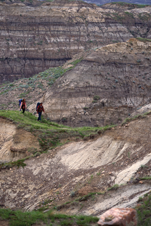

Module 1—Thinking Energy
Lesson 7—Hess’ Law
 Get Focused
Get Focused

© 2008 Jupiterimages Corporation
Hiking is a popular ecotour activity. Participants often want to see remote, untouched areas to get a sense of the natural habitat. Hiking in the Drumheller Badlands provides a great opportunity to learn about geology, paleontology, and other science disciplines while enjoying hiking's many other benefits.
In the photograph shown, the trail the hikers are on dips downward and then slopes upward again. How do these small changes in elevation affect the hikers’ level of effort?
In the last lesson you used chemical potential energy diagrams to represent the enthalpy change of a reaction. What does a change in position on a potential energy diagram represent?
You have probably hiked over hilly terrain before. Did you break your hike into manageable goals or steps? Did breaking your hike into steps affect the outcome of your day’s effort? Chances are that thinking in steps and taking frequent breaks got you to the end of your journey refreshed and having enjoyed some of the sights along the way.
Breaking a hike into small steps could be an analogy for a chemical reaction performed as a series of steps that results in the desired products. Is there a difference in the enthalpy change of reaction for the total process when it occurs in steps?
Consider the following questions as you complete Lesson 7:
- What is Hess’ law?
- How does Hess’ law relate to enthalpies of reaction?
 Module 1: Lesson 7 Assignment
Module 1: Lesson 7 Assignment
Download a copy of the Module 1: Lesson 7 Assignment to your computer now.
In Lesson 8 you will complete an assignment that covers material from Lessons 6, 7, and 8. It is important that you continue to summarize what you learn as you work through these lessons.